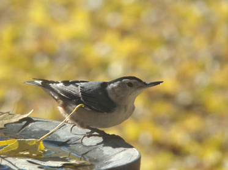

There are roughly 30 species of the family Sittidae throughout the world except for South America, Central America, and central and southern Africa. I've only seen two – the white- and re-breasted. Both are a delight to watch, as they are industrious and animated.
In the winter white-breasted nuthatches flock with chickadees, titmice, and an occasional Carolina wren. One source includes the downy woodpecker in this flock. You may see all of these at your feeding station at the same time. When I replenish the feeders' supply of sunflower seeds, out of nowhere it seems, these birds appear to feed, each species in its own manner. As noted in another chapter, the chickadees will alert the flock when it finds food and it is thought the others are aware of this and travel with them to reap the benefit. Wickipedia also reports that information carried in the chickadee's call also alerts to the presence of predators.
The Golden Bird Guide gives this succinct description. "Nuthatches are large-headed, short-tailed, short legged, tree-climbing birds that glean insects from the bark of trunks and limbs. Acrobatic, equally at home climbing up, around or down a trunk head first." Some of its nicknames are "topsy-turvy bird," "upside-down bird," "devil-down-head," or "tree mouse." The American naturalist Herbert Brandt made this amusing observation: "The nuthatch runs fearlessly about any bark surface, assuming every conceivable position, all with the nimbleness and the apparent disregard of a fly for the laws of gravity. It proceeds with hops, jerks, and short jumps as though it were responding to uncoiling springs. In fact as a whole [its] life seems a series of abrupt starts and stops."
The white-breasted nuthatch is six inches long with plumage resembling the chickadee's; however not its shape – it is much bigger and perhaps sleeker, as its wings extend to almost tip of tail, giving it a svelte appearance. It has a solid black cap and nape, white face and throat and a blue-gray back. The female's crown is gray. Reddish-brown on rump and flanks varies from bird to bird, and some females have a black cap, so it sometimes is a challenge to tell them apart.
The nuthatch has a long, strong black-gray beak with which it probes, head first down a tree trunk, for insects, finding those that "upright" birds may not.
In addition to insects and spiders, its other natural food is nuts and acorns. It visits feeders for sunflower seeds and suet. The nuthatch stores seeds under the bark of trees in its head-first manner; because of this other birds may not find its cache. It also stores acorns and hickory nuts, for the winter. The beak construction allows it to crack nuts and acorns adeptly. It boggles the mind to think of this relatively small bird cracking a hickory nut! With its large head, powerful beak and strong legs, it is built well for its upside-down activity and feeding.
To photograph this active bird, one must have the patience of Job, as it flits onto a feeder, snatches up a seed and flies off with it – usually to a tree where it will crack it open or perhaps poke it under the bark of a tree for a later snack. The exception to this manner of feeding is when it clings to a feeder and "sorts through" sunflower seeds, tossing to the ground the ones that don't meet its criteria. I often think this is a symbiotic gesture to the ground-feeders!
The white-breasted nuthatch has a no-nonsense attitude. It is not intimidated by birds much larger, and it may spread its wings and dart at other birds monopolizing a feeder. It is also unafraid of humans and can be coaxed to take sunflower seeds from the hand.
The nuthatch is easy to identify by its jerky, undulating flight, its upside down feeding and its general appearance. You will be aware when one is in the area by its distinctive nasal call, "qui-qui-qui-qui-qui-qui-qui," as Wikipedia describes. To me it sounds more like a nasal "ankh." A squeaky "nit," uttered up to 30 times a minute may be heard in the winter. The vocalizations vary with regions.
The breeding habitat of the white-breasted is deciduous woodlands. It's a cavity nester in mature or decaying oak, beech and hickory, as these trees provide edible seeds. Being monogamous and non-migratory, the pair stay together in their established territory of 25-38 acres the year around. When one partner dies or for whatever reason leaves, the surviving bird will take a new mate.
In courtship, the male bows, spreads his tail, drops his wings and sways back and forth. He also feeds her, and this continues through incubation. The cavity nest is usually a natural hole high in a tree that may be an old woodpecker's nesting site. It has been known to occupy a bluebird's nesting box. Five to nine reddish-brown speckled eggs incubate in about two weeks. Both adults feed the hatchlings through the roughly three weeks to fledging and for two weeks afterward.
The nuthatches mask their nesting site odors from predators by smearing the entrance with pieces of flora or fauna. Wikipedia: "The nuthatch may also smear blister beetles around the entrance to its nest, and it has been suggested that the unpleasant smell from the crushed insects deters squirrels, its chief competitor for natural tree cavities." Predators are owls, hawks, squirrels and climbing snakes.
It is thought that the longevity of a species may be due to the difference in concern about survival of young vs. adults. The white-breasted nuthatch is shorter-lived than the red-breasted but has more young and reacts more to egg-eating predators. The red-breasted is more concerned with predators of the adult bird.
This charming little bird is experiencing population increase; however, loss of cavity sites may change this. Leave the aging hardwood trees standing on your property! They provide nesting sites for many cavity-nesting birds!
